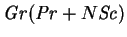
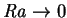
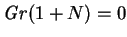

The flow to first order in the Grashof number in a spherical cavity subjected to horizontal gradients of vapour mass fraction and temperature is seen to embody the two mechanisms adduced by Mallinson and de Vahl Davis (1973, 1977) for spanwise flow in a horizontally heated cuboid: the buoyancy effect, by which the end-walls retard the convective disturbance of the density field and so lead to spanwise density gradients; and the inertia effect. The terms in the governing equations responsible for these mechanisms are evident in the analytical derivation and expression of these corrections for the sphere. Although I have not been able to obtain equivalent solutions for the cuboid, the same terms would be active. The analysis has also made clear the conditions under which the corrections would not occur. The buoyancy effect vanishes with the Rayleigh number, or its equivalent for nonisothermal vapour transport, , and also if the flow is vertical, as in the tall cavity solutions of chapter 7, since there is then no disturbance of the temperature or vapour mass fraction fields. The inertia effect vanishes if the stream-lines are parallel, since the force is inversely proportional to their radius of curvature. It also vanishes with the Grashof number; in dimensional terms the force is proportional to the square of the primary velocity. The conclusion that
for rolls adjacent to a solid boundary...as , the axial flow asymptotes to a constant fraction of the cross-sectional flow, a fraction which is certainly not negligible, especially formust be regarded as incorrect. Indeed, it is at variance with the results of Pao (1970), whence de Vahl Davis first derived the idea (Mallinson & de Vahl Davis 1977); thus, Davis's (1967; de Vahl Davis 1998) `finite rolls', with only two nonzero Cartesian velocity components, for the linear stability analysis of a vertical cuboid heated from below are not rendered impossible by this argument (they are still, however, subject to the criticism levelled by Davies-Jones 1967).(de Vahl Davis 1998; paraphrasing Mallinson & de Vahl Davis 1977)
The preceding analysis in no way precludes nonzero spanwise components of velocity at  in a cuboid, since there may be other mechanisms involved. The creeping flow in a cuboid, for example, must, unlike that in a sphere, have a poloidal part. The stream-lines of a toroidal flow are confined to concentric spheres but infinitesimally close to a noncritical point of a solid wall, a solenoidal flow must be parallel to the wall.